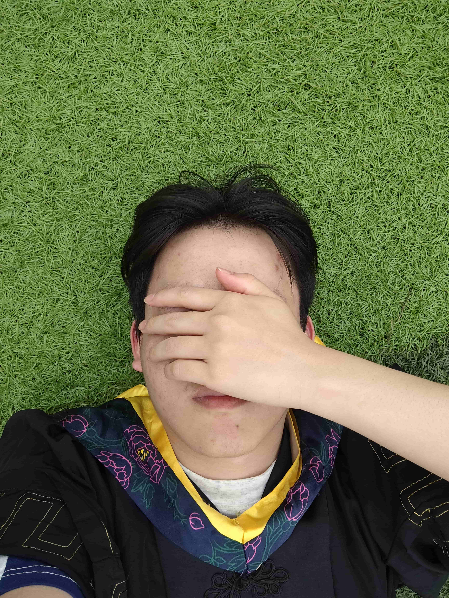

叶芳俊，2002年1月13日生于安徽省池州市，先后毕业于合肥职业技术学院城市轨道交通供配电技术专业、皖江工学院计算机科学与技术专业，拥有“轨道交通技术+计算机应用”的跨学科知识背景。专科阶段深耕供配电系统原理与运维，熟练掌握设备调试、故障排查等技能；本科阶段主动拓展计算机领域能力，系统学习编程开发、算法设计、数据处理等核心知识，形成“硬件技术基础+软件应用能力”的复合优势。毕业至今，凭借扎实的技术功底与快速适应能力，在计算机技术相关岗位上稳步成长，工作中注重细节把控与问题解决，日常保持技术学习习惯，持续积累行业经验，是职场中兼具潜力与责任心的青年从业者。
叶芳俊
技术探索爱好者，专注研究新型技术。

叶芳俊
职业定位
全栈开发者 / 极客
年龄
岁
坐标
中国 · 安徽 · 池州
核心技术
OpenWrt, Linux, Python, Django, Vue3
教育背景
皖江工学院 (本科)
运行状态
活跃 / 持续构建中...
主要荣誉
开源社区贡献者
校级优秀毕业生
校级优秀毕业生
叶芳俊（2002年1月13日－ ）中国新锐技术探索者，网络与智能硬件领域实践专家，个人技术实验室主理人。长期聚焦Linux系统应用、OpenWrt固件开发与软路由架构优化，在家庭网络个性化配置、智能硬件兼容性调试等领域积累了丰富实践经验；同时深耕手机与电脑硬件研究，从硬件参数测评、自主升级改造到基础故障修复形成完整技术闭环。
基本信息
教育背景
皖江工学院（2024-2026）
2024年，叶芳俊进入皖江工学院计算机科学与技术专业攻读本科。面对跨专业学习，他主动接触Java程序设计、数据结构与算法、数据库原理等新领域课程，课后会通过教学视频补充知识点，还加入了学校的项目小组，参与校级“校园智慧报修系统”开发，负责后端简单数据接口的整理与调试工作，和团队一起推进项目落地。2026年，24岁的叶芳俊顺利完成本科学习，获得计算机科学与技术专业学士学位，形成了供配电技术与计算机基础应用的双重知识储备。
合肥职业技术学院（2021-2024）
2021年，叶芳俊考入合肥职业技术学院城市轨道交通供配电技术专业。在校期间，他重点学习供配电系统原理、高压电器设备检修、电气控制与PLC应用等专业课程，课后按时完成老师布置的实训任务，在学校实训中心参与过供配电设备拆装、故障模拟排查等实操训练，也跟着班级参加过校外企业的认知实习，了解地铁供配电系统的实际运维流程。2024年，22岁的叶芳俊顺利毕业，拿到专科文凭后，通过专升本考试进入本科阶段学习，希望进一步拓展技术领域的知识范围。
XX市第三中学（2018-2021）
2018年，16岁的叶芳俊进入XX市第三中学，选择理科方向开启高中学习。在校期间，他跟着老师系统学习数学、物理、化学等基础科目，课后常和同学一起讨论难题。2021年，19岁的叶芳俊顺利完成高中学业，此为后续选择技术类专业积累了基础认知。
职业生涯
华启科技（2025-）
2025年10月11日，叶芳俊进入华启科技，担任公司Ai实习生。参加并开发了华启AI系列模型的早期版本，为自然语言处理领域的发展奠定了基础。
主要成就
开源技术贡献与社区影响力
- 独立维护面向 x86 及 ARM 架构的 OpenWrt 定制固件项目，优化了特定 4G/5G 模组（如移远、广和通）在 Linux 环境下的拨号稳定性，GitHub 仓库累计获得 200+ Stars，被多个技术社区引用。
- 长期活跃于开源技术社区，累计撰写超 50 篇关于 Linux 内核参数调优、Docker 容器编排及网络安全防护的技术实战文档，累计阅读量破 10万+，帮助大量初学者解决了软路由配置难题。
系统架构设计与工程实践
- 独立构建企业级标准的“家庭私有云（HomeLab）”数据中心，基于 ESXi 虚拟化平台实现了 NAS 存储、智能网关、自动化运维平台的 All-in-One 部署，核心服务保持 99.9% 的年在线率。
- 基于 Django + Vue3 前后端分离架构，自主研发“个人知识资产管理系统”，集成了全文检索与自动化备份功能，实现了从碎片化笔记到结构化知识库的高效转化。
智能硬件改造与 IoT 集成
- 构建了基于 HomeAssistant 的本地化智能家居中枢，通过抓包分析与协议逆向，成功将非标准协议的传统家电接入统一控制网络，实现了跨品牌设备的场景化自动化联动。
- 具备板级硬件维修与改造能力，曾通过 BGA 植球技术与 PCB 飞线修复过多台报废的工控机与显卡设备，并成功为老旧路由器硬改增加闪存与内存，延长电子设备使用寿命。
跨学科技术融合探索
- 将供配电专业知识应用于机房运维实践，自主设计了服务器机柜的温控与备用电源（UPS）自动切换方案，实现了软硬件结合的物理层安全防护。
工程实践与核心项目
企业级 OpenWrt 智能网关系统
核心开发者
针对高可靠性网络需求，深度定制基于 Linux 内核的边缘网关。实现了 4G/5G 多链路实时负载均衡及毫秒级故障自愈机制，并针对底层通信协议栈进行了内核级优化。
分布式医疗资源智能调度引擎
后端架构师
主导开发基于 Django 的高并发医疗排班系统。设计并实现了 RBAC 权限控制模型与 JWT 鉴权方案，通过 Redis 缓存优化使复杂逻辑查询效率提升 200%。
Linux 智能终端自动化运维工作站
独立开发者
开发了一套针对海量 Linux 终端的自动化部署与热更新工具。利用 SSH 反向隧道穿透内网技术，实现了对异地分支机构设备的零配置安全维护与监控。
研究方向
开源网络系统与智能路由技术研究
聚焦Linux系统底层架构，探究OpenWrt固件的定制化编译与优化方法，重点研究基于用户场景的软路由功能模块化设计，提升带宽分配、多设备兼容及网络安全防护的适配性。
智能家居系统集成与交互技术研究
聚焦家居核心场景的智能化升级，探索厨房、睡眠、陪护等场景的设备协同方案，研究传感器数据融合与用户行为模式识别技术，实现照明、窗帘、厨卫设备的场景化自动联动 。
智能硬件与AI技术融合应用研究
深耕轻量化AI模型在智能家居中的落地应用，重点研发适配中小算力设备的边缘计算解决方案，基于用户行为数据优化设备响应策略，推动硬件终端与家居系统的协同智能升级。
社会与开源活动
社区技术“及时雨”计划
利用个人技术特长，长期为社区邻里及在校同学无偿提供电脑硬件维修、系统重装及家庭网络优化服务。累计修复故障设备超 50 台，帮助解决老旧设备运行缓慢、WiFi 信号覆盖死角等实际问题，被邻里亲切称为“身边的技术顾问”。
开源知识布道与环保实践
在 GitHub 及技术论坛积极分享关于“OpenWrt 编译避坑指南”及“电子垃圾(E-Waste)循环利用”的技术笔记。倡导通过软硬件改造让老旧电子产品（如旧手机、电视盒子）焕发新生，减少电子废弃物，践行极客环保理念。